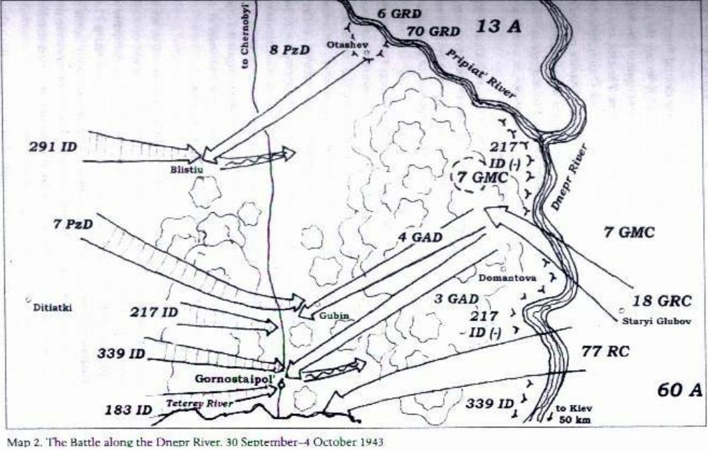

Chương 3

hi các tập đoàn quân trong Phương diện quân Trung tâm của tướng Rokossovskii chặn đứng Tập đoàn quân 9 của Model trong những trận đánh đẫm máu, họ đã thực hiện được một phần trong kế hoạch phản công dài hơi hơn của quân đội Xô viết, Chiến dịch Kutuzov, nhằm loại bỏ mấu lồi Orel ở phía bắc. Cánh phải Phương diện quân gồm các tập đoàn quân 70, 13 và 48 tấn công về hướng bắc nhằm mục tiêu gặp được Tập đoàn quân Cận vệ số 11 của Phương diện quân Tây và đưa 3 quân đoàn Đức đang bảo vệ mấu lồi Orel vào bẫy. Đó là một mục tiêu khó khăn, khi đó các tập đoàn quân kể trên, cũng như nhiều tập đoàn quân khác của Hồng quân, đã chịu những thiệt hại nặng nề để ngăn chặn cuộc tấn công dữ dội của Model. Họ phải tái tổ chức và trang bị cho chiến dịch tấn công trong chỉ khoảng vài ngày. Miêu tả của Litvin giờ xoay quanh giai đoạn này của trận chiến Xô – Đức hè năm1943, nhưng nó còn sơ sài. Có lẽ trí nhớ của ông vào lúc đó bị tổn thương do gặp phải vụ chấn thương gần Ponyri ngày 6/7.”
Chiến dịch Kutuzov
Đầu tiên chúng tôi chiếm lại vị trí ban đầu trước trận Kursk, ngày 15/7 đơn vị tôi tiếp tục tấn công về hướng Kromy, nơi có một trung tâm hậu cần quan trọng của bọn Đức trong mấu lồi Orel. Chúng tôi tiến cùng với đơn vị bên cạnh là Tập đoàn quân 70 của Phương diện quân Trung tâm và bên phải là Phương diện quân Briansk. Cuộc tấn công của quân ta nhằm cắt rời một cụm quân Đức đang phòng thủ Orel. Việc tiến lên rất khó khăn, và chúng tôi tiến rất chậm – chỉ 2km đến 3km mỗi ngày. Khi chúng tôi đẩy lùi được bọn Đức về đến tuyến xuất phát của chúng, Phương diện quân Trung tâm đã mất 40% quân số. Sư đoàn bộ binh 15 Sivash bảo vệ Samodurovka thiệt hại nặng nề. Nhưng thiệt hại của tiểu đoàn chống tăng chúng tôi thì nhẹ – chỉ mỗi Tumarbekov và tôi. Tôi có thể giải thích điều đó chỉ bằng sự thật là những người lính bộ binh phải đối mặt trực tiếp và liên tục với quân địch, họ có thể chết bất cứ lúc nào vì đạn, pháo, hoặc bị xe tăng nghiền nát hay máy bay oanh tạc. Trong khi đó những pháo thủ chống tăng chúng tôi tham chiến chỉ trong từng giai đoạn và được bảo vệ khỏi đạn súng nhỏ và mảnh pháo nhờ tấm lá chắn trên súng.
Chúng tôi tiến qua Malo – arkhangelsk và thấy một nơi phủ kín những ngôi mộ lính Đức. Những cây thập tự bằng gỗ bulô trắng được dựng trên mỗi ngôi mộ và trên đỉnh treo một mũ sắt lính Đức. Có vẻ bọn Đức đã chôn cả một lữ đoàn ở đây. Khi trận đánh diễn ra ở khu vực này, bọn Đức đã mang các xác chết quân mình đến đây chôn. Chúng rất, rất ít khi bỏ lại xác đồng đội phía sau khi rút lui. Quân Đức luôn cố gắng mang theo những người chết và chỉ bỏ họ lại khi sức ép từ những cuộc tiến công của chúng tôi khiến chúng không thể thực hiện được. Tôi có quay lại chỗ đó khoảng 30 năm sau chiến tranh và không tìm thấy một dấu vết nào sót lại của khu nghĩa trang. Chính quyền địa phương đã phá nó để xây một công viên. Ngược lại với người Đức, họ bao giờ cũng gìn giữ cẩn thận những ngôi mộ quân ta ở nước họ. Trong dịp kỷ niệm 50 năm trận Kursk, năm quan chức Đức đã tới và đề nghị cho phép dựng một bia tưởng niệm những người lính Đức vô danh đã ngã xuống. Khi chính quyền địa phương hỏi ý kiến chúng tôi về vấn đề đó, chúng tôi đã nói là chúng tôi không phản đối. Dù sao thì bia tưởng niệm đó vẫn chưa được dựng, tôi không biết tại sao. Thông thường thì tôi không phản đối việc dựng những bia tưởng niệm kiểu như vậy vì về cơ bản những người lính Đức chỉ thực hiện bổn phận của mình. Tất nhiên, nhiều cựu binh Hồng quân khác trong cuộc chiến có cách nhìn nhận khác. Tôi quen một người đã tham chiến ở Stalingrad. Đối với ông ấy việc bọn Đức được phép xây dựng một bia tưởng niệm ở đó là việc làm tôn vinh những những tên lính Đức đã chết, một việc ghê tởm. Ông ấy lúc nào cũng bảo: “Thể nào tôi cũng phóng xe đến đó và húc tan tấm bia bằng chính xe của tôi!”. Tôi nói với ông: “Sao mà ông phải khó chịu thế? Sau tất cả, họ cũng chỉ là những người lính giống như chúng ta. Họ cố bắn hạ ông bằng súng máy và ông cũng cố làm việc tương tự đối với họ. Hãy coi đó là một may mắn khi ông không bị giết, họ chỉ làm ông bị thương thôi mà.” Chúng tôi tiến tiếp về phía Kromy một cách khó khăn và chậm chạp, bọn Đức kiên quyết chống cự. Để miêu tả sơ lược về sự ác liệt của các trận chiến trong chiến dịch Kutuzov chỉ cần nhìn vào thương vong của Phương diện quân Trung tâm. Trong khi Phương diện quân chịu 32.000 thương vong trong năm ngày đầu tiên của trận Kursk do những trận đánh xung quanh Ponyri thì đến lúc quân Đức rút khỏi mấu lồi Orel, tổng thương vong của Phương diện quân đã lên tới 118.000 người. Các lực lượng Xô viết giải phóng Orel ngày 5/8, cùng ngày chúng tôi chiếm lại Belgorod từ tay bọn Đức. Để vinh danh chiến thắng kép này, Stalin đã ra lệnh bắn pháo hoa tại Moscow, lần đầu tiên kể từ khi chiến tranh bắt đầu. Chúng tôi đã thành công trong việc bao vây một số quân Đức, nhưng rất nhiều trong số chúng đã thoát được dễ dàng.
Lời chú của Stuart Britton:
“Ngay sau khi Phương diện quân Trung tâm tham gia tấn công các lực lượng Đức thuộc Cụm tập đoàn quân Trung tâm tại mấu lồi Orel, Von Kluge, tướng chỉ huy Cụm tập đoàn quân này, đã ra lệnh xây dựng một tuyến công sự đặt tên là Phòng tuyến Hagen cắt ngang từ bên này sang bên kia cổ mấu lồi Orel. Chỉ trong lần này là Hitler không buộc quân đội phải kiên quyết phòng ngự. Bị sức ép vì những sự kiện ở cả Nga và Địa Trung Hải, nơi quân Đồng Minh đã đổ bộ lên đảo Sicily và chính quyền Mussolini ở Italy sụp đổ, Hitler hiểu rằng hắn cần các sư đoàn ở cả hai nơi. Hắn quyết định rút ngắn chiến tuyến của Cụm tập đoàn quân Trung tâm bằng cách rút lui khỏi mấu lồi Orel. Đêm ngày 1/8, Tập đoàn quân Thiết giáp 2 và Tập đoàn quân 9 của Cụm tập đoàn quân Trung tâm bắt đầu đánh để rút về Phòng tuyến Hagen. Các Phương diện quân Tây, Briansk và Trung tâm của Hồng quân đuổi sát lực lượng Đức đang rút lui nhưng những cố gắng của họ nhằm khép miệng túi một số lượng lớn quân Đức đã bị cản trở bởi thời tiết mưa to, bùn lầy và sức kháng cự mạnh mẽ của đối phương. Ngày 17/8, các tập đoàn quân Đức đã rút lui thành công về Phòng tuyến Hagen. Những lời kể tóm tắt của Litvin bỏ qua đoạn này cho đến các trận đánh ác liệt tiếp theo, khi các Phương diện quân Briansk và Trung tâm của Hồng quân xông tới trước Phòng tuyến Hagen, bổ sung các đơn vị bằng lính và phương tiện mới, và tái tổ chức để tiếp tục cuộc tấn công. Sau khi chúng tôi chiếm Orel, chiến tuyến hai bên đã giảm độ dài, và chỉ huy Phương diện quân, tướng Rokossovskii, bắt đầu tái tổ chức các lực lượng của mình. Như một phần của việc tái tổ chức đó, Quân đoàn bộ binh Cận vệ 18 của tôi được chuyển sang Tập đoàn quân 70 đang được tăng cường tại khu vực Dmitrovsk – Orlovsk. Tại đó chúng tôi được tái trang bị một phần và nghỉ ngơi, nhưng chúng tôi sớm nhận được lệnh hành quân một lần nữa. Mặc dù chúng tôi không biết gì vào thời điểm đó, tướng Rokossovskii đã quyết định gửi Quân đoàn bộ binh Cận vệ 18 cho Tập đoàn quân 60 đang giữ điểm cực sườn trái của Phương diện quân.”
Trong bóng đêm, chúng tôi rời bỏ hoả điểm của mình và tập trung không xa một con đường lớn. Sáng hôm sau chúng tôi theo lệnh tập hợp đội ngũ và chuẩn bị hành quân tới vùng phụ cận Konotop. Chúng tôi chuẩn bị cho một cuộc tấn công mới vào đêm đó. Hàng quân của sư đoàn di chuyển dọc tuyến đường cao tốc về phía tây nam. Trước khi trời sáng chúng tôi rời còn đường để rẽ sang phải. Chúng tôi tiến khoảng 4km nữa, và ở đó đã có sẵn các hoả điểm mới. Ngay gần đó, những âm thanh của một trận đánh dữ dội có thể nghe thấy rất rõ. Thành phố Sevsk ở đâu đó không xa đây.
Bọn Đức đang cố gắng bẻ gãy chiến tuyến quân ta, vì vậy Quân đoàn 18 của tôi được lệnh dừng di chuyển đến tập trung với Tập đoàn quân 60 mà ở lại giúp ngăn chặn cuộc tấn công của quân Đức. Trong gần một tuần, chúng tôi tham gia vào việc đẩy lùi các cuộc phản công của bọn Đức. Tiểu đoàn chống tăng của tôi chuyển vị trí trong đêm từ khu vực này đến khu vực khác, thỉnh thoảng di chuyển tới 10km-15km. Trong khi di chuyển, thỉnh thoảng chúng tôi đụng phải những đồng nghiệp – những pháo thủ 76mm của Trung đoàn Pháo binh số 1. Chỉ đến khi đó chúng tôi mới hiểu rằng không chỉ có Sư đoàn Đổ bộ đường không 4 mà cả Quân đoàn 18 Cận vệ đã được tái bố trí vào Tập đoàn quân 60 ở sườn trái Phương diện quân.
Lời chú của Stuart Britton:
“Ngày 26/8, Phương diện quân Trung tâm lại mở đợt tấn công vào Cụm tập đoàn quân Trung tâm, tập trung sức mạnh vào Tập đoàn quân 2 đã suy yếu của quân Đức đang phòng thủ Sevsk và hướng về phía nam nơi có điểm nối thiếu vững chắc của nó với Cụm tập đoàn quân Nam. Tập đoàn quân 2 đã bị đánh bầm dập trong các trận chiến mùa đông trước đó và đang ở trong tình trạng rất thảm hại vì Bộ chỉ huy tối cao quân đội Đức chưa tăng cường hay thay thế nó do Tập đoàn quân này không tham gia chiến dịch Citadel. Tập đoàn quân 2 còn bị thiệt hại nặng nề hơn Tập đoàn quân 9 ở phía bắc nhiều, và Phương diện quân Trung tâm của Rokossovskii nhanh chóng bẻ gãy sức phòng ngự của quân Đức trước Sevsk. Xa hơn về phía nam, gần Klintsy, cánh trái của Phương diện quân, Tập đoàn quân 60 nơi Quân đoàn bộ binh Cận vệ 18 ở tuyến đầu, cũng nhanh chóng chọc thủng chiến tuyến của Tập đoàn quân 2 và đánh thọc vào sườn quân Đức. Để chống lại các cuộc tấn công của Phương diện quân Trung tâm, Von Kluge chuyển một sư đoàn thiết giáp và hai sư bộ binh từ Tập đoàn quân 9 và ném chúng vào một cuộc phản công sắc bén ở tây bắc Sevsk vào ngày 29/8. Cùng ngày, Tập đoàn quân 60 Nga thọc sâu 45km vào sườn quân Đức, phía sau cánh phía nam Tập đoàn quân 2. Rokossovskii, người đã tỏ ra khéo léo trong việc vận động các lực lượng của mình trong cuộc phòng thủ Kursk, nay lại chứng tỏ năng khả năng tương tự trong tấn công. Để phát huy thêm thành công của Tập đoàn quân 60 mà ông ta đã phối thuộc Quân đoàn 18 bộ binh Cận vệ từ trước, nay ông ta chuyển tiếp toàn bộ các tập đoàn quân 13, 61 và Tập đoàn quân Xe tăng số 2 sang cánh trái. Các lực lượng phối hợp này đã đụng độ dữ dội với Quân đoàn 8 Đức, lực lượng dự bị của Tập đoàn quân 2. Nghiêm trọng hơn với quân Đức, các tập đoàn quân đang đà thắng lợi của Phương diện quân Trung tâm tiếp tục tiến lên và mở ra một lỗ hổng khổng lồ giữa Cụm tập đoàn quân Trung tâm và Cụm tập đoàn quân Nam mà Bộ chỉ huy tối cao Đức không có cách gì bịt nó lại.[7] Cả hai cụm tập đoàn quân đều bị hở sườn, và con đường tây nam hướng về Kiev hầu như đã mở toang. Tập đoàn quân 2 cố gắng bịt lỗ hổng bằng hai sư đoàn quân cảnh và một sư đoàn lính Hungary nhưng số đó chẳng có tí khả năng nào để chặn đà tiến của ba tập đoàn quân Nga.
Trong cuộc tiến công đó, Tập đoàn quân 60 mà đơn vị của Litvin nằm trong đội hình, đã đẩy cánh trái của Phương diện quân Trung tâm đi xa hết mức và di chuyển tới tận đội hình của đơn vị tiếp giáp về bên phải – Tập đoàn quân 13. Theo cách đó, Tập đoàn quân 60 đã dọn sạch cánh trái Phương diện quân Trung tâm và bảo vệ nó trước bất kỳ một cuộc tấn công bất ngờ nào từ Cụm tập đoàn quân Nam. Nhờ vậy, Phương diện quân Trung tâm đã có thể phối hợp với Phương diện quân Voronezh tiến thẳng tới sông Dnepr với tốc độ ngày một tăng. Lời kể của Litvin giờ quay về tuyến đầu của mũi tấn công đến sông Dnepr.”
Tiến tới sông Dnepr
Cuối cùng thì sức phòng ngự của quân thù cũng bị bẻ gãy, sư đoàn tôi tiến xa hơn về phía tây nam theo hướng chung là nhằm Kiev. Chúng tôi vòng qua Glukhovo và Krolevets và chiếm Konotop, điểm cuối của cuộc hành quân mà không phải đánh trận nào. Chúng tôi tới khu Bakhmach hay đâu đó gần Bakhmach và nghỉ lại ngay trước khi trời sáng. Ở Bakhmach chúng tôi tóm được độ 20 lính Vlasov, những người Nga đã chạy sang phía bên kia. Tiểu đoàn trưởng F.Nishchakov, người mới thay thế thượng uý Bondarev, đến ban chỉ huy trung đoàn pháo để nhận lệnh và trong khi chờ đợi, chúng tôi ngồi nghỉ hoặc ngủ tại chỗ. Đại uý Nishchakov quay lại với lệnh chiến đấu. Tiểu đoàn được giao yểm trợ cho một cuộc tiến quân mới nhằm bảo vệ chống lại các cuộc phản kích có thể xảy ra của quân địch. Trước khi trời sáng, chúng tôi được lệnh rời tuyến xuất phát đến làng Sambor. Chúng tôi tới rìa làng Sambor và dừng lại ngay trước lúc rạng đông. một phụ nữ Ukrain ló ra từ một túp lều nói với chúng tôi rằng bọn Đức đã rời Sambor bằng xe ngựa chỉ mới mười phút trước. Trong tâm trạng lo âu, chị ta sau đó nói thêm có hai tên Đức tụt lại sau vừa mới xông vào nhà chị ta cướp trứng và sữa. Chị ta chỉ hướng chúng đã đi và một số người lập tức bỏ bớt trang bị để rượt theo, bắt kịp những tên kẻ cướp và giết chết những kẻ đam mê trứng và sữa ngay tại chỗ.
Chỉ một lúc sau một tay tiền sát pháo đã thông báo xác định được vị trí những chiếc xe ngựa của bọn Đức đang rút lui. Tiểu đoàn trưởng ra lệnh cho khẩu pháo Số một diệt địch. Sau ba phát đạn, những con ngựa kéo ba chiếc xe đã bị giết. Ba chiếc xe khác bị phá huỷ, bọn Đức bỏ chạy tìm chỗ núp. Tiểu đoàn trưởng ra lệnh tiếp cho hai chiếc xe tiến đến chỗ những cỗ xe ngựa. Có đến tám người trèo lên mỗi xe jeep Willy và chúng tôi bắt đầu lên đường. Xung quanh những cỗ xe ngựa chúng tôi tìm thấy ba tên Đức chết và hai bị thương. Nishchakov ra lệnh cho một tiểu đội trưởng là trung uý Seliutiny và Sasha Kornilov, lái xe của khẩu Số 1, mang theo tám người đuổi theo bọn Đức bỏ trốn. Chúng tôi thì dù thế nào cũng phải ở lại bên những chiếc xe ngựa. Nhóm đuổi theo tách ra và bắt kịp bọn Đức, chúng nổ súng chống cự nhưng những chàng trai của chúng tôi đã bao vây và quật ngã chúng. Trong những chiếc xe bắt được chúng tôi thấy được mọi thứ cho biết về cuộc sống thường ngày của lính Đức. Sau khi chúng tôi phá huỷ đoàn xe ngựa tiếp tế Đức, Đại tá Cận vệ Nikolaev, chỉ huy pháo binh sư đoàn đã tới thăm. Đại uý Kleshchev, chính uỷ sư đoàn hay danh hiệu mới là chỉ huy phó phụ trách chính trị sư đoàn, cũng xuất hiện ở chỗ chúng tôi. Chúng tôi móc càng những khẩu pháo lên và lại tiếp tục tiến. Chúng tôi đi cùng con đường mà đoàn xe ngựa Đức vừa mới đi và bị tiêu diệt, vượt qua những con ngựa bị thương và những cỗ xe hỏng, qua cả xác những tên Đức đã cố thử chống cự và tiếp tục hướng về phía tây nam.
Gaivoron
Chúng tôi đi chậm rãi, thường xuyên dừng lại, nhờ đó chúng tôi có thể quan sát kỹ địa hình phía trước. Chúng tôi tiến một mình – chẳng có đơn vị bộ binh nào cả ở phía trước và hai bên. Khẩu đội của tôi gồm 4 khẩu 45mm, độ 40 người, 35 khẩu tiểu liên PPSh và một tiểu liên Đức, không tính súng ngắn và lựu đạn. Vâng chúng tôi đang dẫn đầu mũi tiến công![8] Những chiếc Willy của chúng tôi đi thành một hàng nhỏ. Đại tá Nikolaev ngồi xe tôi cùng với kíp pháo thủ. Những sĩ quan khác của tiểu đoàn và sư đoàn ngồi trên những chiếc xe đi sau.
Chiều hôm đó chúng tôi đến gần làng Golenok. Chúng tôi dừng lại trên một quả đồi thấp cạnh làng, ngôi làng dưới tầm mắt chúng tôi trông có vẻ thanh bình nằm trong một thung lũng. Chúng tôi quan sát xung quanh bằng ống nhòm, sau đó hạ càng pháo và chĩa chúng vào làng. Mọi người chuẩn bị chiến đấu và một nhóm trinh sát tiến về phía làng. Đại uý Cận vệ Kleshchev chỉ huy nhóm trinh sát. Ngôi làng đã trở nên sạch bóng quân thù và đám trinh sát phát tín hiệu: “Sạch!”
Chúng tôi cẩn thận và chậm rãi tiến vào làng, vừa đi vừa quan sát và giữ khoảng cách giữa các xe từ 100m-150m, dừng lại ở các vệ đường đối diện nhau. Trung uý Seliutin dẫn đầu với một khẩu đội và thiết lập một hoả điểm. Những người dân địa phương bắt đầu đến gần chúng tôi, đầu tiên là hai cậu trẻ độ 12-13 tuổi. Chúng nhìn chòng chọc vào bọn tôi rồi hỏi: “Các anh là lính Xô viết hay Đức?” Chúng tôi nói: “Chúng tôi là những người lính của Hồng quân chiến thắng.” Mấy chú bé bắt đầu nhảy cẫng lên và gọi đám bạn trong làng. Ba cụ già đi lại chỗ chúng tôi và bắt đầu quan sát. Tất cả chúng tôi đều đeo cầu vai, các sĩ quan có những ngôi sao nhỏ trên đó. Ở vùng này, một số người biết đó là dấu hiệu cho thấy đây là đội quân của giai cấp vô sản! Phó chỉ huy chính trị, Đại uý Cận vệ Kleshchev tập hợp dân làng lại và bắt đầu nói với họ về tình hình mặt trận và đất nước. Chỉ huy pháo đội Nishchakov và Đại tá Nikolaev thu thập những tin tức tình báo cần thiết về quân địch: tình hình bọn Đức ở đây, bao nhiêu tên đã rời đi và nhiều thứ khác. Sĩ quan SMERSH[9] thì tiến hành các cuộc điều tra, tìm kiếm dấu hiệu những kẻ đồng loã với bọn Đức.
Chúng tôi thiết lập các hoả điểm. Mỗi khẩu đội dành một nửa số người để canh súng, số còn lại lùng sục trong làng dưới sự chỉ huy của Bộ phận (phản gián) Đặc biệt. Đại tá Nikolaev và Đại uý Nishchakov đang quyết định xem sẽ làm gì tiếp theo. Mục tiêu của ngày hôm nay là tiến đến làng Gaivoron[10] cần đi thêm 8km đến 10km mới đến nơi. Cả ngày nay chúng tôi đã tiến mà không gặp trục trặc nào, giờ là 5h chiều và bụng chúng tôi bắt đầu réo. Dân làng mang cho chúng tôi thức ăn và thậm chí cả Samogon (quốc lủi Nga), nhưng chúng tôi không uống chút nào: chúng tôi đang làm nhiệm vụ tại hoả điểm. Sau khi dừng lại 2h ở các hoả điểm này, chúng tôi đề nghị chỉ huy pháo binh cho phép tiếp tục tiến đến Gaivoron. Không thấy có âm thanh chiến trận nào ở quanh đây, đó là những thứ củng cố cho lý lẽ của chúng tôi. Hơn nữa, chúng tôi cần chuẩn bị một vị trí đẹp cho bữa tối và nấu ăn trước khi lực lượng chính của Trung đoàn 9 tới. Đại tá ngả theo sự xúi giục của chúng tôi. Vài phút sau, một đội kỵ binh xuất hiện, chỉ huy pháo binh ra lệnh cho họ trinh sát quân địch ở Gaivoron. Khoảng 45 phút sau khi đội kỵ binh rời đi để thực hiện nhiệm vụ được giao, chỉ huy khẩu đội tôi, Trung sĩ Cận vệ Korol’kov, và tôi lại một lần nữa đề nghị pháo đội tiến đến Gaivoron. Đại tá thông cảm và chấp nhận yêu cầu, đã sắp hết ngày và chúng tôi nên tiến lên cho đến khi gặp được nhóm trinh sát đi trước: đội kỵ binh. Chúng tôi quay nòng pháo và chuẩn bị đi thì phát hiện một chiếc xe kéo đã hỏng. Các pháo thủ của khẩu đội này dưới sự chỉ huy của Đại uý Cận vệ Kleshchev sẽ phải ở lại phía sau để giải quyết như một đội quân đồn trú. Họ được lệnh phòng thủ ngôi làng trong trường hợp quân địch tấn công.
Ba khẩu đội còn lại tiến về phía trước, chúng tôi vượt qua điểm giao cắt đường tàu và rẽ theo tuyến đường đi về Gaivoron. Chúng tôi vẫn còn khoảng 5km nữa mới tới được thị trấn. Chúng tôi đi một cách lặng lẽ, giữ khoảng cách giữa mỗi xe khoảng 100m, súng ống trong tình trạng sẵn sàng chiến đấu, họng súng chĩa ra xung quanh. Chúng tôi cứ đi nhưng vẫn không thấy dấu vết nào của đội kỵ binh đã đi tiền trạm cho cuộc hành quân. Chúng tôi vượt qua một cái cối xay gió, và bây giờ chỉ còn 1km nữa giữa Gaivoron và chúng tôi. Đại tá ra lệnh dừng lại và nấp sau một đống cỏ khô bên rìa trái con đường. Chúng tôi núp lại và chờ đợi những người lính kỵ binh, xung quanh thật im lặng, chẳng có dấu hiệu của bất cứ ai. Đến tối, đại tá cho phép chỉ huy pháo đội được di chuyển vào Gaivoron. Mệnh lệnh di chuyển như sau: khoảng cách – 100m giữa các xe, tất cả vũ khí cầm tay và lựu đạn phải sẵn sàng, cấm ho hoặc hút thuốc. Chiếc jeep của tôi dẫn đầu, đại tá và chỉ huy SMERSH ngồi cùng xe. Tôi đặt khẩu tiểu liên trên nắp capô. Chúng tôi di chuyển qua những cánh đồng đã cày xới cho đến khi gặp ngôi nhà đầu tiên ở ngoại vi Gaivoron. Lúc này trời đã chạng vạng tối, chúng tôi dừng lại và ngồi yên trên xe. Bỗng từ sau một cánh cổng trông vào một khoảng sân nhỏ bên cạnh, một phụ nữ xuất hiện. Bà ta nhìn vào những ngôi sao trên cầu vai chúng tôi và hiểu rằng chúng tôi là người Nga. Bà ta vẫy tay: “Các anh định làm gì thế? Thị trấn đầy bọn Đức!” Đại tá hỏi chi tiết hơn, và chồng bà ta, người vừa trở về từ trong thị trấn, giải thích tình hình cho ông. Trong khi họ cùng đi vào nhà đôi vợ chồng để nói chuyện, chúng tôi được lệnh hạ pháo xuống và thiết lập hoả điểm gần những ngã rẽ. Các pháo thủ vào vị trí sẵn sàng bắn trong khi chúng tôi, cánh lái xe, mang các hòm đạn đến cho họ. Tôi mang năm hòm đạn nổ mảnh, một hòm đạn xuyên giáp và hai hòm đạn bi để bắn thẳng. Cặp vợ chồng địa phương nói với các sĩ quan có khoảng 400 xe ngựa chở hàng tiếp tế của bọn Đức đang dừng ở quảng trường thị trấn. Trong một khu vườn cách chỗ chúng tôi khoảng 300m có ba khẩu pháo nhỏ đang chĩa về hướng tiến của chúng tôi, nhưng chúng không có xe tăng hoặc vũ khí nặng. Chỉ sau 15 phút, trong ánh sáng đang tắt dần chúng tôi đã bắt đầu nhận ra những con ngựa kéo xe đang ở không xa, và chúng tôi có thể nghe thấy tiếng bọn Đức nói chuyện chậm rãi. Những tay tiền sát pháo cẩn thận quan sát cái gì đang xảy ra trong các vị trí riêng của họ trong khi những người khác lặng lẽ chuẩn bị chiến đấu. một nửa số pháo thủ tập trung quanh súng, nửa còn lại thiết lập các vị trí cảnh giới xung quanh mỗi khẩu pháo.
Hai trong số những khẩu 45mm của chúng tôi chĩa vào giữa thị trấn nơi có những khẩu 37mm và lực lượng chính của quân thù. Khẩu thứ ba của chúng tôi xoay một góc 90 độ so với hai khẩu kia hướng dọc con đường chúng tôi đã đi. Chúng tôi giấu xe sau một ngôi nhà có hàng rào làm bằng cành cây bao quanh. Đám lái xe chúng tôi giúp vào việc bảo vệ các hoả điểm của pháo đội từ bên sườn. Sĩ quan có thâm niên nhất trong số chúng tôi là Đại uý Antipenko, sĩ quan Bộ phận Đặc biệt. Sau khi giấu xe và chiếm lĩnh vị trí, tôi đến chỗ đại uý và đề nghị ông ta cho phép tham gia với những người khác bằng khẩu tiểu liên Đức mà tôi đã chiếm được. Tôi đã mang theo khẩu súng này cùng hai thùng đạn (500 viên) cho nó suốt từ khi rời Ponyri nhưng chưa có dịp nào được thử dùng để chiến đấu. Đại uý ra lệnh cho tôi chọn một vị trí và chờ quân địch hoặc có lệnh mới. Đầu tiên chúng tôi cần nắm vững tình hình, Đại tá Nikolaev ra lệnh bố trí phòng ngự và chờ lực lượng của Trung đoàn 9 đang theo sau tới. Chúng tôi được lệnh chỉ tham chiến khi lực lượng trên đã tới. Đại tá Nikolaev ra lệnh cho chỉ huy pháo đội Nishchakov chuyển lệnh của ông cho chỉ huy trung đoàn đổ bộ đường không đằng sau, giải thích tình huống cho anh ta và giục trung đoàn đó tới Gaivoron. Đại tá Nikolaev cho trung đội trưởng, trung uý Seliutin, đi cùng để thực hiện nhiệm vụ và lái xe của khẩu Số 1, trung sĩ Sasha Kornilov, đưa họ đi bằng xe của anh ta. Lúc này trời đang tối dần và sau đó tối hẳn. Gần nửa đêm, trung uý Seliutin quay lại từ trung đoàn 9 và đến cùng với anh ta là một thiếu tá sĩ quan hành quân trung đoàn, hai sĩ quan khác, một lính thông tin và hai tay súng máy. Họ tiến hành một cuộc họp và quyết định tấn công quân địch ngay trong đêm. Tín hiệu tấn công là loạt đạn từ những khẩu pháo của chúng tôi. Sau nửa đêm một chút, chúng tôi có thể nghe thấy những tiếng lanh canh nhỏ của những vật dụng kim loại va chạm nhau ở phía bên sườn, dọc theo con đường mà chúng tôi đã đi lúc ban ngày. Nhiều lính đổ bộ đường không đã không cài cẩn thận đồ dùng và khi họ hành quân, chiếc gà mèn lúc lắc đập vào xẻng công binh hoặc tay cầm con dao Phần Lan. Chúng tôi hiểu rằng lực lượng chính của Trung đoàn 9 đang tới gần, nhưng bọn Đức cũng nghe thấy tiếng động và lập tức báo động mặc dù có vẻ như chúng đã bỏ người gác.
Khi những người lính bộ binh chỉ còn cách chúng tôi độ 50m thì bất ngờ đại liên Đức khai hoả một tràng dài, nhưng chúng bắn mà không nhìn thấy mục tiêu. Quân ta tản ra khỏi con đường và vận động vào vị trí tấn công từ bên phải và trái, trong khi đó một số vẫn ở lại trong các rãnh vệ đường để thu hút sự chú ý của bọn Đức và hướng hoả lực của chúng vào đó. Lực lượng bộ binh tăng cường đã tách ra một tiểu đoàn đi trước để theo chúng tôi nhưng những phần còn lại của trung đoàn vẫn còn ở cách phía sau một quãng. Khi các bộ phận của đơn vị tách ra này tới được tuyến xuất phát tấn công, đại tá Nikolaev hạ lệnh cho pháo đội nổ súng. Trước hết, chúng tôi nã pháo vào khu vườn, nơi bọn Đức bố trí những khẩu 37mm của chúng. Tiếng nổ của những phát đạn pháo đầu tiên chưa dứt thì pháo đội trưởng bất ngờ lao về phía những chiếc xe ngựa chở đồ tiếp tế của quân địch và dẫn về vị trí của chúng tôi một cặp ngựa. Anh ta cột chúng vào xe của tôi và lại chạy đi lần nữa.
Đạn pháo của chúng tôi và những loạt súng máy của các chú lính dù đã làm bọn Đức choáng váng, rất nhiều tên trong số chúng có vẻ như đang buồn ngủ. Trong 15 phút đầu tiên của trận chiến chúng tôi không gặp tổn thất nào, nhưng dần dần quân địch đã tỉnh táo trở lại và tổ chức chống trả. Nhờ ánh lửa đầu nòng của chúng tôi, bọn Đức đã xác định được vị trí quân ta và trùm lên họ những phát đạn cực kỳ chính xác từ những khẩu 37mm của chúng. Trong khi băng bó những người bị thương, chúng tôi tiếp tục đấu pháo với bọn Đức. Sau 10 phút đến 12 phút chiến đấu, không ai trong chúng tôi bị giết nhưng rất nhiều pháo thủ đã bị thương. Chúng tôi đã mất nhiều người tới mức mỗi khẩu pháo chỉ còn hai pháo thủ. Tại khẩu thứ 3 chỉ còn lái xe và người điều khiển khoá nòng, trung sĩ Piotr Goriachikh là chưa bị thương. Ở vị trí của khẩu thứ hai thì còn lại mỗi chỉ huy khẩu đội, trung sĩ Korol’kov và tôi trong khi khẩu Số một thậm chí chỉ còn một mình lái xe Sasha Kornilov.
Lúc này trận đánh đã di chuyển vào trung tâm Gaivoron và những khẩu pháo của chúng tôi đã không còn cần thiết. Chỉ huy pháo đội ra lệnh rút lui khỏi hoả điểm và giấu pháo ở nơi những cỗ xe của chúng tôi đang đỗ. Chúng tôi thực hiện lệnh, sau đó mang những người bị thương ra vệ đường, lúc này pháo đội chỉ còn lại có bốn người: Chỉ huy pháo đội Nishchakov, chỉ huy khẩu số hai trung sĩ Korol’kov, người điều khiển khoá nòng Goriachikh, và tôi.
2h sáng, một bộ phận tăng cường của tiểu đoàn tiền trạm, trung đoàn đổ bộ đường không 9 kéo chúng tôi vào Gaivoron. Lại một lần nữa, bọn Đức nổ súng vào họ bằng một khẩu đại liên. Chỉ huy pháo binh trung đoàn ra lệnh cho chúng tôi trừ khử khẩu súng máy Đức đó. Trung sĩ Korol’kov đề nghị tôi cùng với anh ta đột nhập lại gần để trinh sát. Cần chọn một vị trí đặt súng mới và con đường để đến chỗ đó. Tôi xác định được kiểu bắn của khẩu súng máy: những loạt ngắn hoặc dài liên tục trong 2-3 giây, sau đó là một khoảng ngừng độ 25-30 giây, rồi cái kiểu đó lại tiếp tục. Những luồng đạn từ khẩu súng máy bay qua đầu chúng tôi độ 20m về phía sau. Chúng tôi xác định một vị trí đặt súng mới ở một trong những ngã tư gần nhất. Chúng tôi có thể đến vị trí bằng cách phi xe jeep xuyên qua khu vườn của một trang trại nằm phía xa và sau đó đẩy pháo vào vị trí bằng tay từ trong sân trang trại. Đó là cách chúng tôi quyết định làm. rung sĩ Korol’kov đợi tôi trong sân, trong khi đó tôi quay lại xe, nổ máy và phóng ra đường. Tôi dừng lại, chờ nghe loạt đạn súng máy tiếp theo để sau đó vọt qua đoạn đường nằm trong tầm đạn. Khẩu súng máy nổ một tràng rồi lặng im. Trước đầu xe, một luồng đạn lửa xanh đỏ bay qua rồi tắt ngấm. Tôi bắt đầu di chuyển từ từ và giữ cho máy nổ to, nhờ vậy sẽ không lo chết máy khi tôi cho xe trườn qua rãnh vệ đường. Bọn Đức không thể phân biệt được tiếng máy xe, những loạt đạn của chúng bắn không xa đầu xe và tiếng xe nghe như tiếng súng máy đang bắn. Ánh sáng từ cửa sổ những căn nhà gần đó soi đường cho tôi. Ngay khi trườn ra khỏi chiếc xe, tôi nghe thấy tiếng rít của một viên đạn pháo đang bay tới. Tôi kịp thời lao vào một chỗ ẩn núp dưới mái vòm một ngôi nhà gần đó. Khẩu đội trưởng nằm lăn xuống đất sau lá chắn của khẩu pháo. Viên đạn nổ cách đó khoảng 15m, mảnh đạn bắn vỡ cửa sổ căn nhà nhỏ nơi tôi đang đứng trong khi ba mảnh khác xuyên vào tường ngay trên đầu tôi và tôi bị vôi vữa rơi đầy người. Tôi vội nhìn chiếc xe, nó không sao. Chúng tôi hạ càng pháo và thả phần dưới lá chắn xuống, nó sẽ bảo vệ những đôi chân của chúng tôi trong trường hợp bị một viên đạn bất ngờ từ khẩu súng máy khi đang di chuyển pháo đến vị trí bắn đã định.
Chúng tôi lăn khẩu pháo đến góc đối diện ngã tư, Korol’kov ở lại với súng để chuẩn bị cho cho trận chiến trong khi tôi quay lại xe để lấy đạn. Tôi chọn một thùng đạn nổ mảnh và mang đến chỗ con đường. Tại đó tôi buộc một đoạn dây điện thoại của bọn Đức vào thùng đạn rồi băng qua đường cùng với đầu kia của sợi dây. Theo cách đó chúng tôi kéo thùng đạn lăn lóc qua con đường đến vị trí đặt súng. Chúng tôi nạp đạn và chuẩn bị những viên đạn tiếp theo. Khẩu súng máy lại loé sáng với một loạt đạn nữa. Núp sau lá chắn súng, những viên đạn không làm chúng tôi sợ hãi. Khẩu đội trưởng ngay lập tức định vị luồng lửa đạn qua đỉnh tấm chắn và nhấn cò. Khẩu pháo gầm lên. Tôi nhìn cái khoá nòng giật lại thẳng về phía mình cho đến khi nó đến điểm dừng. Khóa nòng bật mở cái rình và ném ra vỏ đạn rỗng với khói trắng bốc lên nghi ngút. Ngay chỗ cái vỏ đạn vừa bị tống ra, tôi nhanh chóng nạp vào một viên đạn khác. Khoá nòng đóng lại với một tiếng click đặc trưng và nòng pháo di chuyển trên giá đỡ về vị trí chuẩn. Tôi hét: “Súng giật bình thường thôi!” và một phát đạn khác vọt ra khỏi nòng, rồi một phát nữa, rồi phát thứ tư. Sau phát thứ bảy, chúng tôi tạm dừng và quan sát kết quả công việc. Korol’kov ngắm vào mục tiêu, tôi thì tính thời gian: 25, 30, 45, 75 giây đã trôi qua, khẩu súng máy địch vẫn câm lặng. Chúng tôi vẫn còn ba viên đạn chưa bắn nên mặc dù khẩu súng máy Đức vẫn im lặng, chỉ huy khẩu đội vẫn ra lệnh bắn hết số đạn còn lại vào cùng mục tiêu. Tôi nạp đạn và khẩu pháo khạc lửa cho đến khi hết sạch cả 10 viên đạn. Korol’kov đứng hẳn lên để quan sát trong khi tôi thu nhặt những vỏ đạn đã bắn và nhét chúng lại vào thùng. Chúng tôi phải giao lại chúng cho hậu cần hoặc một hình phạt tồi tệ gì đó sẽ diễn ra. Tôi tìm thấy 9 vỏ đạn rỗng nhưng cái thứ 10 thoát khỏi cuộc tìm kiếm sơ bộ đầu tiên này. Ba phút đến năm phút đã qua và khẩu súng máy địch vẫn câm lặng. Khẩu đội trưởng bắt đầu chạy đi báo cáo pháo đội trưởng rằng nhiệm vụ đã hoàn thành trong khi tơi ở lại chỗ khẩu pháo để tiếp tục tìm kiếm cái vỏ đạn thứ 10. Tôi tìm thấy nó trong rãnh bên đường cách nơi đặt pháo khoảng 7m. Tay trung sĩ quay lại và chúng tôi trở về chỗ cũ, phía sau hàng rào ở rìa trang trại. Trận đánh đã lui vào sâu trong làng, chỉ huy pháo binh và tất cả các sĩ quan chỉ huy trận đánh đều quyết định đến gần khu vực chiến sự hơn. Đại tá Nikolaev yêu cầu chỉ huy pháo đội giao cho ông ta một người để làm liên lạc viên. Trung sĩ Korol Kov được chọn và đi cùng với các sĩ quan. Giờ còn lại ba chúng tôi với ba khẩu pháo, khoảng 300 viên đạn, và một chiếc jeep còn nửa bình xăng. Trời đang sáng dần, sự chống cự của quân địch bắt đầu tăng.
Chỉ huy pháo đội ra lệnh cho chúng tôi thiết lập một hoả điểm mới trên một mô đất thấp cách vị trí cũ khoảng 250m về phía bắc. Chúng tôi lôi một khẩu pháo đi và thiết lập xong hoả điểm, tôi cũng mang theo 8 thùng đạn. Chúng tôi đặt hai khẩu còn lại và chiếc xe jeep của tôi trong một khu vực lòng chảo nhỏ cách hoả điểm chừng 70m. Chúng tôi ra càng pháo và đào công sự, sau đó chỉnh hướng và chuẩn bị đạn: một hộp đạn xuyên giáp, một hộp đạn lửa xuyên giáp, hai hộp đạn bi và mười hộp đạn nổ mảnh. Sau khi chúng tôi hoàn thành việc chuẩn bị chiến đấu, pháo đội trưởng chấp thuận cho nghỉ giải lao trong khi bản thân anh ta thì rời vị trí đến chỗ bố trí cối 82mm và lựu pháo của quân ta ở gần đó. Khi quay trở lại, anh ta nói những khẩu cối và lựu pháo chỉ còn từ 12 đến 16 viên đạn mỗi khẩu. Chúng tôi vẫn còn gần như toàn bộ đạn dành cho ba ngày, vì vậy các vị chỉ huy sắp xếp như sau: Nếu quân địch tiến tới gần chúng tôi, chúng tôi sẽ nã đạn để ghìm đầu chúng xuống đất. Sau đó cối sẽ bắn thành từng loạt để tiêu diệt địch tại nơi chúng nằm. Bắn loạt là một trong những cách pháo kích một vị trí, theo đó đạn sẽ rơi cùng lúc thành một vùng mảnh đạn, kết quả là không một mẩu đất nào thoát khỏi bị mảnh đạn xuyên vào và một người nào trong khu vực đó không bị ăn đạn là chuyện bất khả thi. Mặt trời đã mọc, tiếng động của trận đánh có thể nghe thấy đâu đó ở phía nam ngoại vi ngôi làng. Phiên người đứng quan sát đầu tiên là Trung sĩ Goriachikh, pháo đội trưởng và tôi nằm dưới giá súng đã được chúng tôi đặt sâu dưới hố và ngay lập tức rơi vào cơn buồn ngủ.
Vào khoảng trưa, đến lượt tôi thay phiên đứng quan sát và thông báo những gì nhìn thấy, trong 30 phút đầu mọi thứ có vẻ bình yên. Bên phải chúng tôi là các pháo thủ đơn vị lựu pháo của trung đoàn, họ không đào công sự cho pháo, có thể nhìn thấy họ rất rõ ràng. Khoảng 2h chiều, những phát đạn bắt đầu rít lên và bay qua chỗ chúng tôi. Tôi núp sau lá chắn súng và tìm xem phát đạn bắn ra từ đâu. Tôi chẳng thấy dấu vết của bất cứ ai phía trước. Rồi lại một viên đạn nữa bay qua đầu tôi về bên phải và tôi đã có thể định hướng được đường bay của nó. Tôi nhìn sang trái, nơi có cái cối xay gió và bắt đầu quan sát nó thật kỹ. Khi chúng tôi tiến vào Gaivoron tối qua cái cối xay gió này ở bên phải đường đi và không có ai bắn vào chúng tôi từ trong đó. Rõ ràng là vào một lúc nào đó trong đêm, có lẽ khi chúng tôi đang chuẩn bị sơ tán thương binh, bọn Đức đã thâm nhập qua bên sườn. Hồi đêm chúng tôi đã nghe nói bọn Đức đang chiếm điểm giao cắt đường tàu và phải đến sáng nay quân ta mới vượt qua vị trí đó. Vì thế khi những chiếc xe chở thương binh chuẩn bị xuất phát, tôi bèn đưa khẩu tiểu liên Đức chiến lợi phẩm và hai băng đạn cho nhóm hộ tống. Giờ tôi đang chăm chú quan sát chiếc cối xay gió, tôi thông báo có một đám khói do súng trường tạo ra và lại một viên đạn khác rít lên bay qua đầu. Kẻ nào đó đang bắn từ chỗ trục cối xay. Khi thấy viên đạn thứ hai bắn ra từ cùng vị trí đó, tôi báo cáo với pháo đội trưởng. Thêm hai phát đạn nữa bay qua chỗ chúng tôi, pháo đội trưởng ra lệnh quay pháo sang trái và nạp đạn nổ mảnh. Chúng tôi nạp đạn và pháo đội trưởng bắn ba phát liền vào cối xay. Phát thứ nhất bắn tung mái cối xay gió, và sau phát thứ ba, tháp quay cối xay đã bị phá huỷ. Để đảm bảo loại trừ hẳn bọn Đức đang chiếm lĩnh cối xay, pháo đội trưởng bắn tiếp hai phát đạn lửa vào tường làm nó vỡ tung trong những tia lửa. Độ 40 phút sau tôi thông báo có một số người đang di chuyển dưới sự che chở của những bụi cây trong một đường rãnh phía trước. Qua ống nhòm, tôi có thể thấy rằng chúng là bọn lính súng máy Đức. Cái rãnh đã cho chúng nơi trú ẩn tuyệt vời chống lại súng trường hoặc súng máy và chúng đang tập trung lực lượng ở đó. Tôi báo cáo với pháo đội trưởng, anh ta ra lệnh sẵn sàng chiến đấu. Chúng tôi để sẵn hộp đạn bi bắn thẳng và đạn nổ mảnh còn bản thân tôi bắt đầu quan sát bọn Đức qua kính ngắm của khẩu 45mm. Cái rãnh nằm cách chúng tôi khoảng 500m. Sau một quãng thời gian quan sát ngắn, pháo đội trưởng Nishchakov lệnh cho tôi chạy tới đơn vị cối và lựu pháo bên phải để thông báo tình hình cho họ. Khi tôi quay về hoả điểm, sĩ quan của các đơn vị bên cạnh đã sẵn sàng, cuộc thảo luận của họ về cách phối hợp trong trận đánh sắp tới đang kết thúc. Bộ binh địch còn chưa tới gần vì vậy chúng tôi có đủ thời gian chuẩn bị vũ khí và lựu đạn của mình. Chúng tôi không lo gì cho bản thân: chúng tôi có khoảng 150 viên đạn nổ mảnh và 30 hộp đạn bi. Để tiêu diệt 100 tên Đức thế là đủ. Trong khi chúng tôi chuẩn bị, đám lính súng máy Đức từng lớp rời khỏi con rãnh và sau đó xếp thành những đợt sóng tiến về phía chúng tôi.
Bọn Đức cứ tiến tới, không bắn, tay cầm súng máy và lựu đạn gài quanh ủng. Pháo đội trưởng Nishchakov ngồi sau ống ngắm điều chỉnh đường bắn, anh ta đợi cho đến khi bọn Đức đã vượt qua con rãnh 50m mới khai hoả với phát đầu tiên giết chết ngay một sĩ quan Đức. Đám lính súng máy Đức quay đầu nhìn lại nơi phát ra tiếng nổ một cách hoảng hốt: Chỉ có khói mà chẳng có hố đạn hay tay sĩ quan. Viên đạn đã bắn đúng ngực tên sĩ quan làm hắn nổ tung thành từng mảnh nhưng không hề tạo ra lỗ đạn trên mặt đất. Dù vậy, bọn Đức vẫn tiếp tục cuộc tấn công. Nishchakov bắn tiếp ba phát, chúng nổ tung ở hai đầu và chính giữa hàng quân Đức làm chết khoảng một chục tên. Phát này pháo đội trưởng chọn một nhóm lính Đức tập trung sát nhau, ngắm vào tên ở giữa và nã một phát trúng ngay ngực hắn. Quả đạn nổ tung gây thương vong cho cả đám xung quanh. Sau ba tiếng nổ đó, bọn Đức bắt đầu xông lên với đầu cúi thấp, vừa chạy vừa bắn. Chúng tôi tăng tốc độ bắn. Bọn Đức tản ra núp. Sau mỗi phát pháo của chúng tôi, bọn Đức lại xông lên trong khoảng 30 giây. Chúng tôi đã bắn 25 phát vào chúng, nhiều tên đã nằm lăn trên mặt đất. Nishchakov bắt đầu bắn vào những nơi chúng tập trung lại với nhau và chúng tôi bắn tiếp 20 phát. Khi bọn Đức chẳng còn giữ được hàng lối gì nữa chúng tôi ngừng bắn. Giờ là lúc những anh lính súng cối vào cuộc quật ngã chúng với những loạt ba quả một. Khu vực trận đánh trở nên mù mịt. Sau cuộc tấn công của súng cối kéo dài 5-7 phút, bọn Đức một lần nữa lại xông lên, tuy nhiên số lượng của chúng giờ đây đã ít hơn. một tên Đức cứ liên tục nhìn lại phía sau, vung vẩy khẩu súng ngắn và gào thét gì đó. Nishchakov ngắm vào hắn một cách cẩn thận và tên chỉ huy này ngã gục. Những tên khác thấy thế lại nằm rạp xuống lần nữa. Giờ chúng còn cách hoả điểm của chúng tôi chừng 300m. Chúng nổ súng nhưng tôi chẳng nghe thấy tiếng đạn réo gì cả, chắc là vì tôi không gây sự chú ý nào đối với chúng. Tôi bật nắp các hòm đạn ra và chuẩn bị đạn, Goriachikh nạp đạn và theo dõi cơ cấu giật, pháo đội trưởng Nishchakov ngắm và bắn.
Bọn Đức nằm nguyên chỗ cũ khoảng 10 phút và khẩu pháo của chúng tôi cũng lặng im. Có lẽ chúng nghĩ rằng đạn dược của chúng tôi đã cạn nên bắt đầu tập hợp thành từng nhóm nhỏ hai đến ba tên để mang những kẻ bị thương quay về chỗ an toàn dưới con rãnh. Khi đã có độ nửa tá những nhóm như vậy xuất hiện chúng tôi lại khai hoả và phá vỡ năm nhóm trong số đó. Những tên Đức chưa bị thương bỏ những kẻ bị thương nằm đó và chọn cách núp sau một đống cỏ khô, nơi chúng tôi cũng đã núp hôm qua khi tiến vào Gaivoron. Khoảng 15 tên Đức núp sau đống cỏ đó, chúng tôi không thể trục chúng ra được, chúng tôi đã nã vài phát đạn lửa vào đống cỏ nhưng nó vẫn chẳng chịu cháy cho. Đột nhiên chúng tôi nhìn thấy một tên lính mô tô Đức ra tín hiệu từ trong làng và phóng xe về phía đống cỏ. Pháo đội trưởng không ngắm bắn hắn, anh ta để hắn đến chỗ đống cỏ an toàn rồi khuất sau nó. Lúc này Nishchakov mới hạ lệnh nạp đạn xuyên giáp rồi bắn vào đống cỏ. Tiếp theo đó là những phát đạn nổ mảnh cuối cùng cũng làm đống cỏ bốc cháy. Đến tối một khẩu đội 76mm đến từ Trung đoàn pháo Cận vệ một tham chiến, chỉ huy của họ là Trung tá Kachin. Chỉ đến lúc này chúng tôi mới cảm thấy cực kỳ mệt và đói. Những đồng đội từ trung đoàn pháo nhanh chóng chuẩn bị chiến đấu và bắt đầu nã từng loạt đạn vào các mục tiêu không nhìn thấy. Trong khi đó chúng tôi chuẩn bị cho việc di chuyển ba khẩu 45mm của mình, việc đó làm chúng tôi mất khoảng một giờ. Ngay sau đó một chiếc xe tải ZIS – 5 của sư đoàn tới nơi và chúng tôi móc hai khẩu pháo vào nó, khẩu còn lại chúng tôi móc vào chiếc jeep của mình. Chúng tôi quay lại con đường hôm qua, mọi cái vẫn thế ngoại trừ giờ cái cối xay gió đã bị phá huỷ. Chúng tôi về đến nơi đã xuất phát đêm hôm trước và được chào đón như những người hùng. Hầu hết những người chúng tôi gặp là những đồng chí đã bị thương đêm qua, đa số họ muốn ở lại tiểu đoàn pháo nên đã từ chối đi bệnh viện.
Vượt sông Dnepr
Quân Đức phòng thủ Gaivoron đã rút lui và chúng tôi giải phóng làng Ich’nia ngày hôm sau, 18/9. Tại đó sức chống trả của bọn Đức bị đập vụn dễ dàng, có lẽ do những thiệt hại về người và trang bị của chúng trong trận đánh hôm trước. Tốc độ tiến của chúng tôi ngày một tăng, vào lúc đó Phương diện quân Voronezh đã đi chậm hơn chúng tôi khoảng 70km. Trong một tuần chúng tôi di chuyển từ cánh này sang cánh kia để yểm trợ cho những người lính đổ bộ đường không ở bất cứ nơi nào cần đến những khẩu pháo nhỏ bé của chúng tôi. Thắng lợi trong những trận đánh trước đẩy lùi dần cảm giác sợ hãi, chúng tôi tin tưởng những viên đạn ghém sẽ mang chúng tôi đến với chiến thắng.
Không xa thành phố Bobrovitsa, pháo đội tôi nhận lệnh quét sạch một tuyến đường cho những chú lính dù trong một phân đội phía trước, họ đang gặp trở ngại bởi những cỗ pháo tự hành[11] và đại liên địch. Ngay sau khi nhận nhiệm vụ, Nishchakov và Seliutin bố trí trinh sát trước. Chúng tôi nhanh chóng tiến lên tuyến đầu, tháo pháo khỏi xe và dàn chúng ra mà không đào công sự. Quân địch phát hiện ra chúng tôi và nã súng máy vào các hoả điểm nhưng chúng tôi vẫn an toàn vì thực tế là những khẩu pháo đã đặt trong tình trạng sẵn sàng với lá chắn được hạ thấp, các pháo thủ nấp sau những tấm lá chắn đó. Pháo đội trưởng Nishchakov ra lệnh mỗi khẩu pháo đều bắn liên tiếp vào những khẩu pháo tự hành và hoả điểm súng máy Đức. Tốp pháo thủ số 3 nhanh chóng xác định mục tiêu và bắn cháy một xe, trong khi đó mục tiêu của tôi rúi lui vào nơi trú ẩn. Những khẩu còn lại trong pháo đội bắn vào những hoả điểm súng máy. Với một cỗ pháo tự hành bốc cháy và một chiếc nữa bỏ chạy, những khẩu súng máy Đức trở nên quá yếu. Chỉ huy phân đội dù đi đầu dẫn quân xông lên trong khi chúng tôi móc lại pháo vào xe. Pháo đội trưởng bắt đầu nhận báo cáo trận đánh từ chỉ huy các khẩu đội, trong số người tham chiến chỉ có Egorov, người vác đạn của khẩu đội 2 bị thương. Egorov là người hàng đêm khâu vá quần áo giày tất cho cả pháo đội nên tất cả chúng tôi đều lo lắng cho vết thương của anh ta! Nhưng Egorov đã từ chối đi viện, và cũng như tôi trước đây khi bị thương ở Ponyri, anh ta được dưỡng bệnh ở bếp ăn sư đoàn.
Sư đoàn Đổ bộ đường không số 4 của tôi lại tiếp tục tiến công về hướng Kiev, dọc đường chúng tôi gặp phải thị trấn Priluki nằm bên phải, một đơn vị Đức đồn trú tại thị trấn này và quân ta không nên tiến xa hơn mà để chúng lại phía sau. Vì vậy, chúng tôi nhận được lệnh dừng cuộc tấn công về hướng Kiev trong 24h để giải phóng Priluki. Mỗi trung đoàn của sư đoàn tổ chức một phân đội cơ động để thực hiện nhiệm vụ này và các pháo đội trong tiểu đoàn pháo của tôi được phối thuộc cho họ, một pháo đội cho mỗi trung đoàn. Pháo đội tôi được phân vào Trung đoàn 9. Đến tối quân ta đã chiếm được Priluki. Mỗi khẩu pháo có tới 110 viên đạn và chúng tôi dễ dàng phá huỷ hàng loạt xe tải, xe thiết giáp chở quân và pháo tự hành của bọn Đức. Tối đó khi Sư đoàn Cận vệ số 42, đơn vị được phân công giải phóng Priluki đến nơi thì thấy chúng tôi đã chiếm xong thị trấn, và chúng tôi rời đi tiến về Kiev. Chúng tôi đã nghĩ mình chỉ tiến thẳng vào Kiev và tham gia vào việc giải phóng nó nhưng khi đến gần thành phố, hàng quân của chúng tôi lại rẽ sang hướng về làng Domantovo nằm bên bờ tây sông Dnepr, cách Kiev khoảng 60km về phía Bắc. (xem bản đồ)
Sư đoàn tôi tập trung toàn bộ các đơn vị ở đó, dưới sự che chở của nhưng thân cây trên bờ đối diện và chuẩn bị vượt sông. Bọn Đức đóng tại bờ tây, nơi cao hơn và dễ dàng nhìn sang bờ đông thoai thoải của con sông.

Lời chú của Britton:
“Mặc dù tuyến đường đến Kiev đã mở ra cho Tập đoàn quân 60 của Rokossovskii, Tổng hành dinh nghĩ rằng thành phố này quá khó để tiến hành một cuộc tấn công trực diện, vì thế họ lệnh cho Tập đoàn quân 60 chuyển hướng về phía tây bắc, nơi Tập đoàn quân 13 của Phương diện quân Trung tâm đã chiếm được nhiều đầu cầu nhỏ phía bên kia sông Dnepr về phía bắc Kiev, đó là nơi sông Pripiat đổ vào sông Dnepr. Theo kế hoạch đầy tham vọng của Tổng hành dinh, các tập đoàn quân 13 và 60 của Rokossovskii sẽ phối hợp với nhau để bao vây Kiev từ phía bắc, trong khi đó các tập đoàn quân của Vatutin tiến qua đầu cầu Bukrin qua sông Dnepr để tới phía nam Kiev. Để kế hoạch này thành công, điều quan trọng là Phương diện quân Trung tâm phải chiếm và giữ được những đầu cầu qua sông Pripiat, con sông này đổ vào sông Dnepr tạo thành một cái barie trước những cuộc vận động ngoặt về hướng Kiev của bất cứ lực lượng nào đóng ở phía bắc ngã ba sông mà nó tạo thành với Dnepr. Tập đoàn quân 13 đã hoàn thành nhiệm vụ này vào ngày 25/9 khi Quân đoàn bộ binh Cận vệ 17 chiếm được một đầu cầu bên kia sông Pripiat ở Otashev, và Trung đoàn 70 Cận vệ thuộc Sư 6 bộ binh Cận vệ cũng chiếm được một đầu cầu nhỏ khác gần Domantovo. Tổng hành dinh muốn tăng cường đầu cầu nhỏ này và bảo vệ nó trước những cuộc phản công của người Đức, khi đó nó sẽ trở thành bàn đạp cho chiến dịch đánh chiếm Kiev.
Theo kế hoạch này, Tổng hành dinh lệnh cho Quân đoàn bộ binh Cận vệ 18 thuộc Tập đoàn quân 60, trong đó bao gồm cả Sư 4 Đổ bộ đường không Cận vệ, đánh vượt sông Dnepr tới phía nam vị trí Trung đoàn 70 gần Domantovo. Tiếp theo, Quân đoàn 18 tiến lên chiếm các làng đã bị biến thành cứ điểm quân Đức là Gubin và Ditiatki. Nhiệm vụ là khó khăn. Tại điểm đó sông Dnepr rộng 500m-700m và sâu 6m-8m. Các bộ phận của Quân đoàn LIX thuộc Tập đoàn quân thiết giáp 4 Đức vẫn còn bố trí trên tuyến phòng ngự sông Dnepr. Cuốn lịch sử Sư 4 Đổ bộ đường không viết rằng một điểm cao được đánh dấu 115,4 trên bản đồ quân sự nhìn xuống sông Dnepr án ngữ điểm vượt sông được chỉ định này và cản trở đường tiến đến cả hai ngôi làng Gubin và Ditiatki. Nhận được lệnh đánh vượt sông và chiếm điểm cao này, chỉ huy Trung đoàn 15 của Sư 4 Đổ bộ đường không, Trung tá Birenboim quyết định không tấn công trực diện mà vượt sông thành hai mũi ở phía bắc và nam quả đồi bọn Đức đang chiếm giữ. Litvin mô tả một trong các mũi vượt sông đó. Trung đoàn Đổ bộ đường không số 15 nhận lệnh chọn ra một đơn vị xung kích để đánh vượt sông Dnepr vào đêm 29 rạng ngày 30/9. Trung tá Birenboim chọn một đại đội khoảng 100 người do Trung uý G.F.Bastrakov chỉ huy. Khi đó không phải tất cả binh sĩ đều biết bơi (một số mới trở về từ bệnh viện trong khi một số khác là những người mới được tăng cường), họ đóng ba cái bè lớn và đặt súng máy lên đó. Ngay khi màn đêm buông xuống vào tối ngày 29/9, đại đội xung kích của Bastrakov lặng lẽ rời bờ. Họ qua được giữa sông và khi chỉ còn 150m nữa là đến bờ bên kia thì lính gác Đức phát hiện có chuyện gì đó và bắn một quả pháo sáng. Hai chớp sáng trong chốc lát soi rọi cả mặt sông và bọn Đức chắc là đã nhìn thấy hạm đội bé nhỏ của quân ta. Chúng bắt đầu nã đạn vào những chiếc bè. Bastrakov biết rằng một nửa số người dưới quyền mình không biết bơi nhưng vẫn ra lệnh: “Tất cả xuống nước!” Tất cả nhảy ra ngoài. Trong khi những người không biết bơi bám vào thành bè, những người còn lại bắt đầu bơi vào bờ. Bọn Đức nhìn thấy cái bè rỗng không dưới ánh sáng lập loè của những trái sáng và nghĩ rằng chúng đã quét sạch những người lính Nga. Khi những trái sáng tắt, các hoả điểm Đức cũng yên lặng trở lại.
Khi quân ta đã sang đến bờ bên kia, họ lặng lẽ tập hợp lại, Bastrakov ra lệnh cho mọi người cởi hết quần áo chỉ giữ lại đồ lót. Anh ta không muốn mọi người bị vướng víu vì những bộ quân phục ướt và nặng khi thực hiện nhiệm vụ sắp tới. Các binh sĩ cởi bỏ áo choàng và quân phục, chụp lấy những khẩu súng máy và bắt đầu rón rén trèo lên điểm cao. Khi bọn Đức bắn tiếp một trái sáng, những chiến sĩ ta liền gào lên “Ura!” và tràn tới. Bọn Đức phản ứng lại cứ như thể chúng gặp phải ma, chúng hết sức hoảng hốt trước cuộc tấn công bất thần như ma quỷ hiện hình của những chiến binh trong bộ đồ lót trắng. Quân ta xông vào công sự Đức và bắn hạ gần như toàn bộ, thậm chí cả những kẻ đã cố bỏ chạy. Các chiến sĩ đổ bộ đường không của chúng tôi đã đập tan bọn Đức, sau đó quay lại bờ sông quay quay những cái áo trên đầu rồi mặc chúng vào. Nhờ chiến công trong cuộc vượt sông Dnepr đó, Bastrakov đã được tặng danh hiệu Anh hùng.[12] Ngay lập tức, đám công binh của chúng tôi bắt đầu dựng một cây cầu bằng ván qua sông Dnepr nằm ngay dưới mặt nước để máy bay trinh sát Đức không phát hiện được. Tiếp theo họ làm một cái cầu phao dài 400m. Bọn Đức đã tấn công cái cầu phao nhìn thấy đó nhưng cây cầu dưới mặt nước thì không phát hiện được. Rạng sáng, các trung đoàn của sư đoàn tôi ào qua những cây cầu đó và tản ra thiết lập một đầu cầu bên kia sông. Khi chúng tôi đang đợi đến lượt mình vượt sông thì tiểu đoàn nhận được lệnh cho một xe jeep Willy và một lái xe đến sở chỉ huy Trung đoàn 9 Đổ bộ đường không Cận vệ. Nishchakov đã chọn tôi.